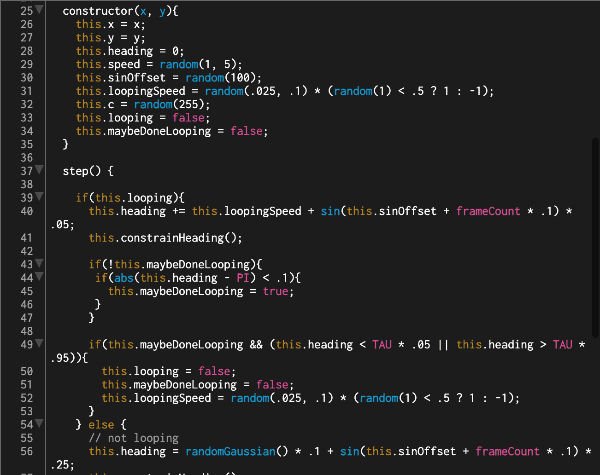

Generative Aesthetics
We chose data topic number 8, generative aesthetics which we defined as a data topic that allows visual aesthetics to be formed using any data. We created Rant to Me, which collects the data of different various individuals' issues and bottled up emotions through our computer generated artefact. Rant to Me allows people to experience therapy in a new form, where the individual creates art whilst interacting with the Rant to Me platform. Our computer generated artefact is simply using voice to generate the unqiue designs that cognates with the participants.
Some more content below.


- 
Loopers and Coding
Eliza found an already made code via a website called "Happy Coding", this website showed a p5js generated design of lines moving in loops. It's colours and movement are programmed to random. This was the kind of generated design we hoped to achieve, however due to the complication of how loopers work, we resorted working with a simple code that we understand its functions.
Although the loopers code, seems to be the ideal randomised line movement we as a group wanted to achieve, we went back to the basics and worked with codes that we can simply understand. Upon consulting with Andreas, he additionally gave us a tutorial on creating a randomised "paint splatter" shape, which helped us use as the maximum volume for our voice interactive p5.js platform.